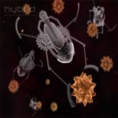

Home > Medical
Medical
{kind=link}
The Future of Surgery
TEDMED just released a fascinating talk about color-coded surgery by Dr. Quyen Nguyen, a surgeon at the University of California San Diego. We’ve recently covered some pivotal developments in Nature Medicine and Science Translational Medicine that describe the use of fluorescent probes to selectively illuminate cancer cells during surgery. Those projects resulted from international collaborations (The Netherlands, Germany, Indiana; Japan, Maryland), and Dr. Nguyen herself has been working with a team including Nobel Laureate in Chemistry, Dr. Roger Tsien, so it is appropriate that she emphasizes in the talk that “successful innovation is a team sport.” Interestingly, her group has also worked on illuminating nerves so that surgeons are better able to avoid severing important connections. If the pace of this work continues, it may not be too long before surgical fields look more like Gray’s Anatomy pictures.
{kind=link}
The Future of Nano Tech
Nanotechnology involves manipulating properties and structures at the nanoscale, often involving dimensions that are just tiny fractions of the width of a human hair. Nanotechnology is already being used in products in its passive form, such as cosmetics and sunscreens, and it is expected that in the coming decades, new phases of products, such as better batteries and improved electronics equipment, will be developed and have far-reaching implications.
One area of nanotechnology application that holds the promise of providing great benefits for society in the future is in the realm of medicine. Nanotechnology is already being used as the basis for new, more effective drug delivery systems and is in early stage development as scaffolding in nerve regeneration research. Moreover, the National Cancer Institute has created the Alliance for Nanotechnology in Cancer in the hope that investments in this branch of nanomedicine could lead to breakthroughs in terms of detecting, diagnosing, and treating various forms of cancer.
{kind=link}
The Future of Robots in the Medical Field
Robots like the da Vinci surgical robot have enabled humans to achieve a remarkable degree of precision when performing certain surgeries, but these technologies – while incredible – are really just an extension of a physician’s body, like a very high tech scalpel or forceps.
A new generation of tiny snake-like robots is actually capable of crawling through the body to perform surgery, but again, these are guided by a human physician, and tethered to a external machine.